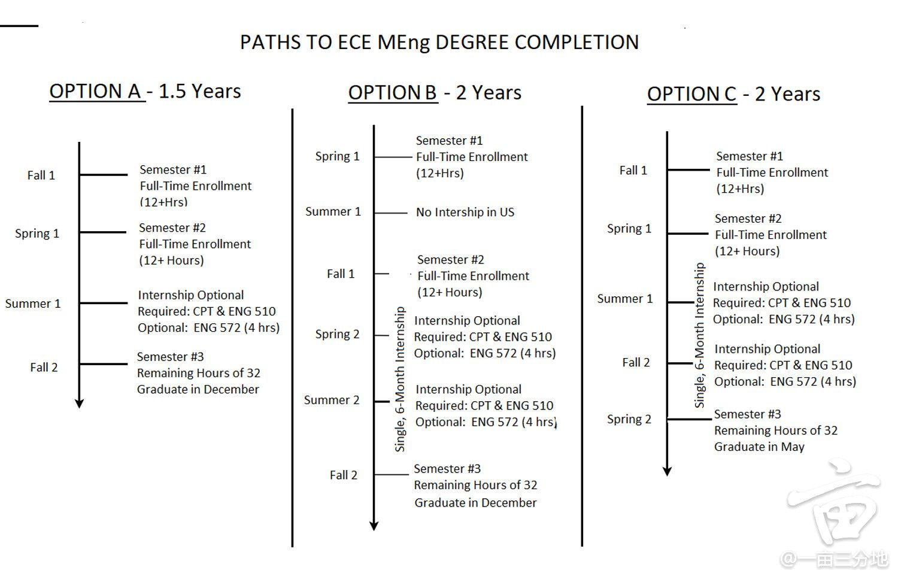

括号中排名对应：U.S. News世界排名，QS世界排名，THE世界排名，U.S. News美国排名，CSRankings全选（均为2023年）
UIUC (74, 85, 48, 41, 2)
一个学院限一个项目，有Coop，MSIM关联度小转码，不接受 WES
TOEFL 79-102 有限状态准入，需要 EPT
https://grad.illinois.edu/admissions/apply
*MCS (A-)
https://cs.illinois.edu/academics/graduate/professional-mcs/campus-master-computer-science
2-3 continuous semesters（官网可申请延期），non-thesis，课程设置与MSCS一致
DDL：早 1.15，晚 3.30
PS 1000词，可 Update，可以 defer 至多一年
GRE: Not required（若要提交可只提交 PDF 而不用 ETS 送分），TOEFL: 1836, 78（可不填）
*ECE MEng (B+)
Rolling，DDL：6.1，1.5-2 years，能选成CS课
GRE：Optional
https://ece.illinois.edu/admissions/graduate/meng-degree

Cornell (21, 20, 20, 17, 8)
ECE与ECE CT为转码项目
一个校区限一个项目，ECE很硬（限修一门CS）
https://gradprofessional.cornell.edu/apply/
CS MEng (SS)
https://www.cs.cornell.edu/masters/apply
1 year，名校
GRE: Not Accepted
MPS-IS (B+)
https://infosci.cornell.edu/masters/mps/admissions/how-apply
2+1 semesters，口语卡25
CS MEng CT (A+)
https://tech.cornell.edu/programs/masters-programs/master-in-computer-science/
DDL 1.5 后 Rolling，9 months，WES，创业，名校，不可延期
*CM CT(A)
https://tech.cornell.edu/programs/masters-programs/jacobs-technion-cornell-dual-ms-connective-media/
2 years，MSIS degree，thesis，面试，创业，实习，名校，转码友好
要求WES，PS 2100词有格式要求，不可 update，不可春季入学
DDL：一轮 1.5，二轮 2.1，滚动 4.1
GRE: Not Accepted，TOEFL: 2098, 0000（undecided）
UC Berkeley (4, 27, 8, 20, 9)
https://gradapp.berkeley.edu/apply/
*EECS MEng (A+)
https://eecs.berkeley.edu/academics/graduate/industry-programs/meng
https://funginstitute.berkeley.edu/programs-centers/full-time-program/engineering-departments/eecs/
9 months，名校，接受WES
DDL：1.8，GRE：Not required（4833）TOEFL：4833；
CMU (118, 52, 28, 22, 1)
不同项目不同通道，可多选
https://www.cmu.edu/academics/index.html
项目汇总：https://zhuanlan.zhihu.com/p/538394187
SCS
*MITS(A)
CSD: MSCS(SS)
HCI: MHCI
ISR: MSE(B+)
LTI: MCDS(S), MSAII(S), MIIS(S), MLT(SS)
MLD: MSML(SS)
RI: MSCV(S)
CE
ECE: MS(A), SE-SV(A);
INI: MSIN(A+), MSMITE(A-，原MSIT-Mob), MSIS(安全), MSIT-IS(第一年在日本，安全), MSIT-SM;
Heinz
SISM:MISM(B+), MSISPM(安全，管理)
SCS
GRE：Required（2074-0402），TOEFL：4256-78
https://www.cs.cmu.edu/academics/graduate-admissions
MIIS (S)
MSE (B+)
https://applygrad.cs.cmu.edu/apply/index.php
4 semesters，无实习，无选课自由，不编程
PRO 三年工作经验，SS 有工作经验，ES 无信息
*MITS (A)
非常贵，可选 3 或 4 quarters
要求 WES，推荐信需要有实习老板
GRE：Not Accepted，TOEFL：C583
DDL：1.15
https://www.cmu.edu/cmist/academics/graduate-programs/mits/index.html
ECE
3-4 semesters
DDL：12.15，可以 Update 简历和考试成绩
GRE：Optional（2074），TOEFL：2074
*MS (A)
https://www.ece.cmu.edu/academics/ms-ece/index.html
*SE-EV (A)
https://www.ece.cmu.edu/academics/ms-se/index.html
INI
GRE: Not Accepted(2024 Spring)
DDL：早 12.1，晚 1.15
GRE：Not Accepted，TOEFL：2074
*MSIN
https://www.cmu.edu/ini/academics/msin/index.html
*MSMITE
2学期匹兹堡，1~2学期硅谷
https://www.cmu.edu/ini/academics/bicoastal/index.html
Heinz
MISM (B+)
https://www.heinz.cmu.edu/programs/information-systems-management-master/concentrations
偏金融管理，有一定的选课自由
General track-16 months 60%有工作经验，有实习
General track-12 months 三年工作经验
Global 21 months，第一年在澳大利亚，不能实习
BIDA 16 months，更偏商业，没录降级成general 16 months
BIDA 12 months，三年工作经验
GaTech (51, 88, 38, 44, 10)
限两个项目，MSA转码项目且比例不高，Cybersecurity学硕选课限制大
https://gradapp.gatech.edu/apply/
*MSCS (A+)
1.5 years，Coop
https://catalog.gatech.edu/programs/computer-science-ms/
GRE: Required(R5248)
DDL：2.1
*CSE (A)
https://catalog.gatech.edu/programs/computational-science-engineering-ms/
https://www.cse.gatech.edu/sites/cse.gatech.edu/files/handbook-2022-12-06.pdf
1.5-2 years，难度CoC>ISyE>CEE等，只能选一个home unit，偏数学
GRE: Required(R5248)
ECE (A-)
https://www.ece.gatech.edu/masters-degrees
1.5-2 years，选课无限制但要抢，共10门，要修6门ECE，可选有无thesis
可转ECE博，有机会转CSE（难），有一学期Coop
Columbia (7, 22, 11, 18, 14)
限选一个
*MSCS (A-)
https://apply.engineering.columbia.edu/apply/
https://www.cs.columbia.edu/education/ms/
https://www.gradengineering.columbia.edu/graduate-admissions/application-requirements
3 semesters (4+4+2)，4千刀占位费
有劝退（class size大，career support小），10 个 track
DDL：早 1.15，晚 2.15，不可 defer，付款后有视频面试
GRE：Optional（2111），TOEFL：2111；
MSDS (A-)
https://datascience.columbia.edu/education/programs/m-s-in-data-science/
1.5 years
Yale (11, 18, 9, 3, 33)
限选一个
https://apply.grad.yale.edu/apply/
*MSCS (A+)
https://cpsc.yale.edu/academics/graduate-program/master-science
可选1 or 2 years（2年极少，1 year即9 months）
GRE: Required (3987), TOEFL: 3987
DDL：1.2，可以 Update
UPenn (15, 93, 14, 7, 17)
https://www.applyweb.com/upenng/index.ftl
MCIS (SS) 陆本黑洞，DS (S) 比同档差，MCIT零基础转码，CGGT (A-)游戏图形学
建议 WES
Early DDL：11.1，Regular DDL：2.1
GRE: Optional (2888)
SE
https://catalog.upenn.edu/graduate/programs/systems-engineering-mse/
1.5 years，选课友好，压力稍小（有可能转专业或dual）
DS
https://dats.seas.upenn.edu/program/
1.5-2 years，
UCLA (14, 44, 21, 20, 19)
限选一个
https://apply.grad.ucla.edu/portal/landing
MSCS (SS)
https://www.cs.ucla.edu/graduate-admissions/
2 years
*MEng (B+)
https://www.meng.ucla.edu/admissions/
下有7个areas，分别是Artificial Intelligence、Autonomous Systems、Data Science、Digital Health Technology、Green Energy Systems、IoT Systems、Translational Medicine。
1 year，新设项目，无CS title，可转码，可延期1 quarter暑期实习（2022据说难）
DDL：12.1
GRE: Not required，TOEFL: 4837，不接受 WES
Expected TOEFL: W25+S24+R21+L17
UCSD (20, 53, 32, 20, 4)
同一部门限选一个，录取后需要做 WES
CS76 CE方向，偏硬，自由度稍低；EC82 (B+) 信号处理，适合不转码；
MSDS 数据统计，CSME数学，DSE面向从业者
仅 fall，DDL（12.20）后 Rolling，不可 update
https://connect.grad.ucsd.edu/apply/
https://cse.ucsd.edu/graduate/degree-programs/ms-program
https://www.ece.ucsd.edu/graduate/graduate-admissions
https://www.xiaohongshu.com/explore/62e358ca000000001202e9ed
*CS75 (A)
1+ years，random，CS方向
GRE: Optional(4836)，TOEFL：4836
*EC79 (A-)
能选CS课最多的CE，不可转CS
GRE: Required（4836-1203，部门码不必须），TOEFL：4836-66，部门码不必须
EC93 (MLDS) (B+)
https://www.ece.ucsd.edu/faculty-research/ece-research-areas/machine-learning-data-science-impacted
ML相关，需要对口的科研经历
GRE: Required（4836-1203，部门码不必须），TOEFL：4836-66，部门码不必须
JHU (10, 24, 15, 7, 53)
MSSI信息安全
https://applygrad.jhu.edu/apply/
*MSECS (B)
https://www.cs.jhu.edu/academic-programs/graduate-studies/mse-programs/
3-4 semesters，科研校
DDL 2.15，春夏秋均有，建议 WES（可以不送）
SOP 500K，1 inch
GRE: 学院要求但系不看（4655-0402）, TOEFL: C559-78
Duke (25, 50, 25, 10, 28)
MIDS跨学科
不可 update
https://applygp.duke.edu/apply/
*MSCS (A+)
https://www.cs.duke.edu/graduate/ms
官网定性为研究项目
1.5-2 years
GRE: Required(5156-5199)，TOEFL: 5156，可以同时提交 WES
DDL：1.31
*ECE (A-)
https://ece.duke.edu/masters/degrees/ms
https://ece.duke.edu/masters/degrees/meng
1.5-2 years，MS与MEng可互转，可全软课
DDL：MEng 1.15（3.15 出结果），3.15（4.15 出结果）；MS 1.16（2.28 出结果）
GRE: Optional，TOEFL: 5156
MEng 600刀 占位费
UChi (22, 10, 13, 6, 25)
MScA数据分析
MPCS (A-)
https://masters.cs.uchicago.edu/page/admissions
http://course-info.cs.uchicago.edu/
https://www.1point3acres.com/bbs/thread-843060-1-1.html
4 quarters，转码项目，Bar高，人少，夜校，不安全，课很基础，纯就业导向，找工好。
9-Course学制没有实习、不提供CPT，12-Course有实习、提供CPT
NWU (24, 32, 26, 10, 31)
https://www.applyweb.com/nugrad/index.ftl
限选一个
*MSCS (A-)
https://www.mccormick.northwestern.edu/computer-science/academics/graduate/masters/
4 quarters/1.5 years，MSCS研究向，看SoP，就业一般，学费贵
三个track，thesis，project，course，前两者可以最多延2 quarters
DDL：早 11.30（1.10 出结果），中 12.31（2.10 出结果），晚 2.28（4.30 出结果）
GRE：Not required，TOEFL：1565
UMich (19, 25, 23, 25, 57)
ECE仅AI相关
MSCSE（S）
https://cse.engin.umich.edu/academics/graduate/admissions/apply/
偏学术，DP极少
GRE: Not Accepted，Toefl：1839；只有fall。
DDL：1.15
DS (A-)
https://lsa.umich.edu/stats/masters_students/mastersprograms/data-science-masters-program.html
https://www.1point3acres.com/bbs/thread-576109-1-1.html
1-2 years，就业不太好，选不了CS课
NYU (31, 39, 24, 25, 19)
*Courant MSCS (B+)
https://cs.nyu.edu/home/master/prospective_admission.html
https://apply.gsas.nyu.edu/apply/
4 semesters
GRE: Suggested（2596），TOEFL：2596
DDL：3.1，不支持 Update
*Tandon MSCS (B+)
https://engineering.nyu.edu/academics/programs/computer-science-ms
https://apply.engineering.nyu.edu/apply/
4 semesters
有自己评估系统，不接受 WES，不可 defer
DDL：早 12.1，晚 2.15
GRE: Suggested (2668)，TOEFL: 2668
Tandon CE (B-)
https://www.zhihu.com/question/453935331
转码，较硬
UT-Austin (43, 72, 50, 38, 14)
https://cockrell.utexas.edu/admissions/graduate
MSCS (SS)
https://www.cs.utexas.edu/graduate/prospective-students/apply
偏科研，可转博
*ECE (A+)
https://www.ece.utexas.edu/academics/graduate
2 years，SES track可当CS，有Coop和TA/RA机会，可转博
DDL：12.1，不可 Update
GRE：Not Considered（6882），TOEFL：6882；
SOP 不是最终版不要提交
UW-Madison (63, 83, 81, 38, 16)
可以一份申请费申三个项目，用同一个 CV 但不同的 PS
关于第二专业：https://www.cs.wisc.edu/add-a-second-cs-ms-major/
*CS-PMP/MSCS/MSDE
https://www.cs.wisc.edu/ms-data-engineering/
https://www.cs.wisc.edu/our-graduate-degrees-programs/
3-4 semesters，学费便宜，无TA/RA，学位与 MSCS 相同
一份申请费可以同时申三个志愿
DDL：MSCS 12.15，PMP 3.15，MSDE 3.15可以 Update
GRE: Not Required，TOEFL：1846
MSCS 与 PhD 同标准，可互转
USC (80, 134, 65, 25, 26)
*CS28 (General) (B+)
https://www.cs.usc.edu/academic-programs/masters/computer-science-general/
1.5-2 years，纯看GPA
GRE: Not Required，TOEFL：4852
DDL：12.15，Update 较麻烦，1000 刀占位费，可以 defer 半年或一年
UW（6, 63, 26, 6, 7）
*EE PMP（B-）
https://www.ece.uw.edu/academics/pmp/
https://grad.uw.edu/prospective-students/how-to-apply/international-applicants/https://grad.uw.edu/prospective-students/how-to-apply/apply-now/
https://www.1point3acres.com/bbs/thread-604805-1-1.html
https://www.1point3acres.com/bbs/thread-979569-1-1.html
https://www.1point3acres.com/bbs/thread-719858-1-1.html
1.5-3 years，4 quarters，晚上上课
DDL：1.5（3月初出结果），3.15（5月中出结果），5.15（7月中出结果）
GRE: Not Required，TOEFL：4854
其它
UNC (41, 102, 69, 29, 48)
MSCS几乎不收陆本
Brown (129, 63, 61,13, 37)
ScM CS (A-)
https://graduateprograms.brown.edu/graduate-program/computer-science-scm
2-4 semesters，托福卡105，课程质量高，wkld 小
DDL：1.15
GRE: Suggested
UCSB (67, 149, 64, 32, 23)
MSCS (A-)
https://www.cs.ucsb.edu/index.php/education/graduate/masters-degree
1.5 years，关注prof的match度，可申TA，陆本较少
UCI (84, 235, 95, 34, 26)
MCS (B+)
Rolling，4 quarters/15 months，就业向（MSCS研究向，课程设置类似），不可转博
NetSys (B-)
4-6 quarters，一年3个quarter
MSWE
15 months，5 quarters
Rice (180, 100, 147, 15, 43)
NEU (194, 388, 168, 44, 12)，Rolling
Dartmouth (261, 205, 123, 12, 65)
TAMU (148, 164, 181, 67, 37)